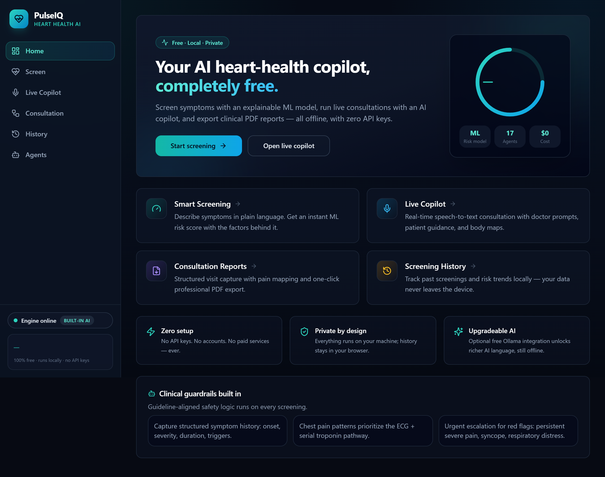
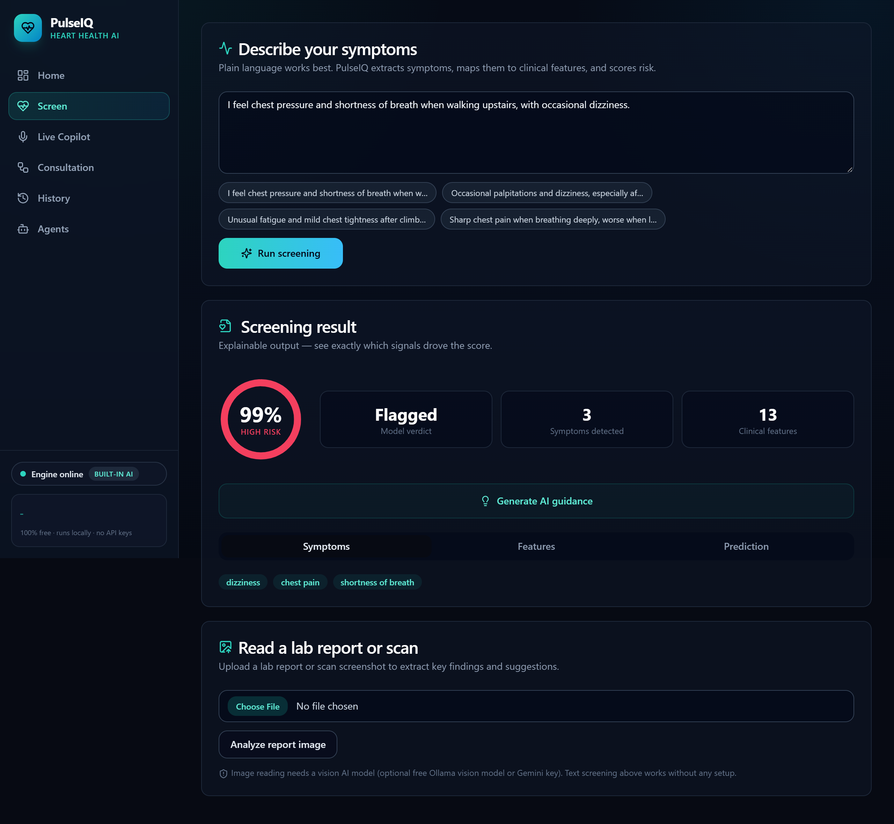
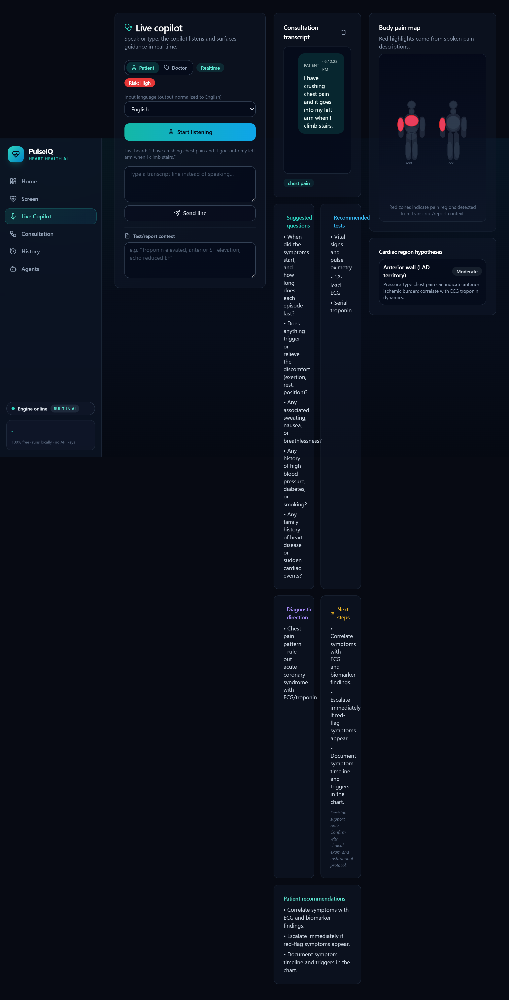
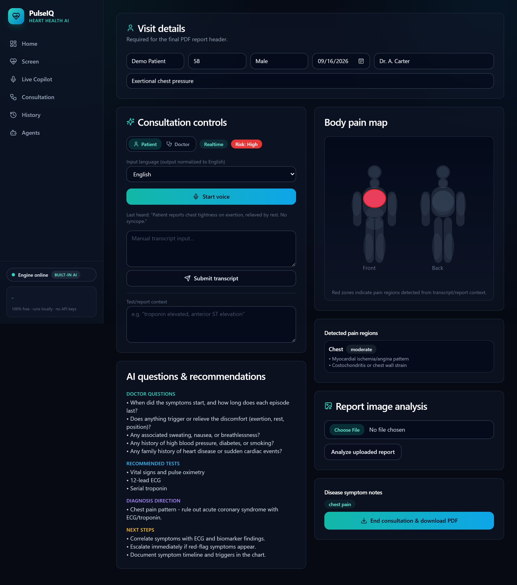

PulseIQ screens symptoms with an explainable ML model, runs live consultations with an AI copilot, maps pain to body regions, and exports clinical PDF reports — all running on your own machine, with zero configuration.
A complete clinical decision-support workspace — not a toy demo.
Describe symptoms in plain language and get an instant, explainable ML risk score with the factors behind it.
Realtime speech-to-text consultations with doctor prompts, patient guidance, and cardiac-region hypotheses.
An interactive front/back body diagram highlights reported pain regions as the patient speaks.
Structured visit capture with one-click professional PDF export for the patient chart.
Speak in Urdu, Hindi, Arabic, French, Spanish, German, or Chinese — transcripts are normalized to English.
Everything runs locally. History lives in your browser. No accounts, no telemetry, no cloud dependency.
Works out of the box; upgrade when you want — never pay.
ollama pull llama3.2 — PulseIQ auto-detects it and upgrades all AI text.GEMINI_API_KEY and it's used automatically. Never required.Captured directly from the running app.




44-second walkthrough of every major screen.
Windows one-time setup, then launch. No keys, no accounts.
# 1. one-time setup (PowerShell, from project root) Set-ExecutionPolicy -Scope Process -ExecutionPolicy Bypass .\setup.ps1 # 2. start backend + frontend .\run-backend.ps1 .\run-frontend.ps1 # 3. open http://localhost:5173
macOS / Linux instructions and the full feature list live in the GitHub README.